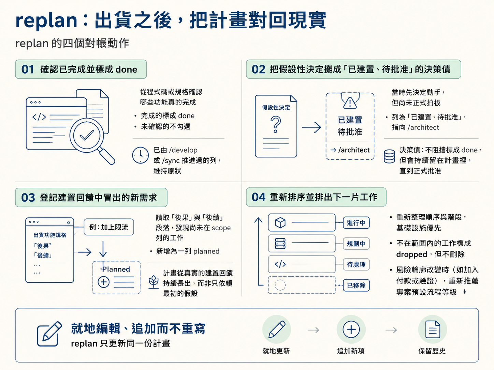
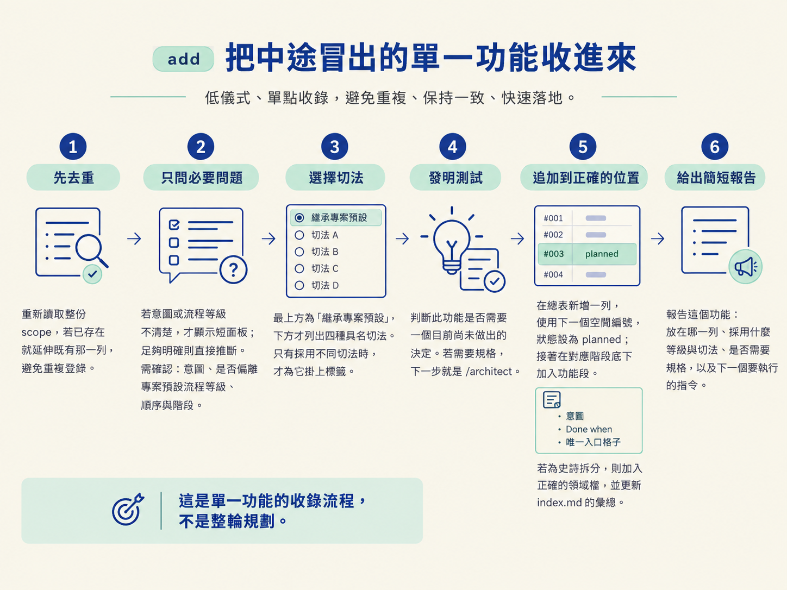
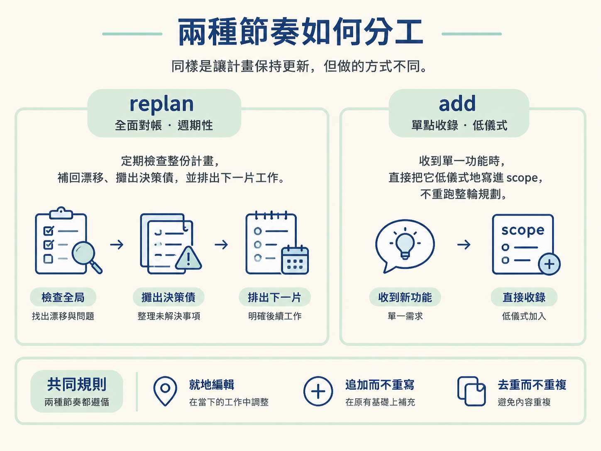

功能出貨後，能跑一次 replan，讓計畫重新對上現實；中途冒出單一功能時，也能用 add 低儀式地把它收進 scope。
你在第一週整理好 scope：功能清單整齊，順序也排好了。接著你開始開發。兩週後回頭看，卻發現有個功能早已完成並上線，狀態還停在 planned；建置時你又發現「這樣不行，得先做限流」，但這個需求沒有被寫進計畫；另一個功能則早已決定不做，卻仍掛在清單上，每次看到都得重新想一次「它到底還要不要做」。
這不是因為你偷懶。問題在於，「寫好一份計畫」和「維持一份計畫」本來就是兩件事。前面幾節處理的是如何產生計畫，這一節處理的是計畫如何跟著現實一起變動。這也是 /scope 最常被使用的地方：實際開發中，功能會持續出貨，計畫也得持續對帳。
當 scope 已經存在，而你執行不帶參數的 /scope 時，推斷出的意圖就是 replan。它不是出了問題才使用的補救工具，而是日常節奏的一部分：每完成一個功能或階段，就重新跑一次。
replan 一開始會先讀取現況，並給你一段簡短報告，包括目前所在的分支、與遠端相比是領先還是落後、各種狀態各有幾個功能，以及每個進行中功能的接續點在哪裡。這讓不帶參數的 /scope 同時成為定位工具：你可以快速知道上次做到哪裡，以及現在安全地能接著做什麼。
讀完現況後，replan 會處理四件事。
done，而不是看到清單就一律蓋章。沒有確認的功能不會被勾選；已經由 /develop 或 /sync 推進過的列，也會維持原狀。/architect。這是一種決策債：它不會阻擋功能被標成 done，但會持續顯眼地留在計畫裡，直到正式批准。planned。計畫因此能從真實的建置回饋中持續長出來，而不是只依賴最初的假設。dropped，但不會刪除。如果專案的風險輪廓明顯改變，例如中途加入付款或驗證，replan 也會重新推薦一次專案的預設流程等級。
對帳完成後，replan 會排出下一片工作：從順序最低的 planned 列開始，需要規格的先走 /architect，不需要規格的直接走 /develop。
整個過程都採用就地編輯：調整既有儲存格、追加新的列，不重寫整份檔案，也絕不產生新的日期檔。這樣做的重點是保留原本的累積紀錄，而不是每次對帳都把計畫換成一份看似乾淨、實際上失去脈絡的新檔案。
不是每次變動都值得跑一輪完整的對帳。有時候你只是做到一半，突然發現「對了，還需要匯出 CSV」。這是一個單一功能，不是一整個階段。此時執行 /scope 匯出 CSV，因為 scope 已存在、參數又指名一個功能，推斷出的意圖就是 add。
add 刻意把儀式壓到最低，只處理必要的幾件事。
/architect。planned；接著在對應階段底下加入功能段，內容包括意圖、一行 Done when，以及唯一的入口格子。如果是史詩拆分，則加入正確的領域檔，並更新 index.md 的彙總。
replan 和 add 的差別，可以想成「全面對帳」與「單點收錄」。replan 會週期性地檢查整份計畫，把漂移補回來、把決策債攤出來，再排出下一片工作；add 則是在收到單一功能時，直接把它低儀式地寫進 scope，不重跑整輪規劃。

兩者都遵守同一套規則：就地編輯、追加而不重寫、去重而不重複。這些規則看似保守，實際上是在保護計畫的連續性。若每次都另存一份新檔案，或把既有內容整份改寫，計畫很快就會失去「事情怎麼走到這裡」的脈絡。
它們共用的核心也很簡單：scope 是可以累積的地方。對話會蒸發，檔案不會。每完成一個段落，就把計畫重新對回現實，下一個階段、甚至下一位隊友，才能直接從檔案讀出「現在該做什麼」，而不是從一段已經結束的對話裡猜測。
replan 是出貨後的日常對帳：先報告現況，包括分支、與遠端的差距、各狀態的數量，以及進行中功能的接續點；接著確認已完成功能、攤出假設性決定的債、登記建置回饋長出的新需求、重新排序，最後排出下一片工作。add 則是低儀式的單點收錄：先去重、只問必要問題、提供以繼承專案預設為首選的切法面板、用發明測試決定是否需要規格，再追加一列與一個功能段。兩者都採用就地編輯，追加而不重寫。假設性決定不會阻擋功能被標成 done，但會持續被攤在檯面上，直到正式批准。
五節走完，你已經看過 /scope 的完整流程：它會產出什麼、如何推斷意圖、如何依照 repo 形狀起手、如何選擇切法，以及功能出貨後如何維持計畫。現在可以把它跑在練習專案上：從一句點子開始執行一次 /scope，接著在功能出貨後跑 replan；如果中途只冒出一個新功能，就用 add 收進來。最後你會得到一份能繼續帶著專案往前走、而不是停在原地的計畫。